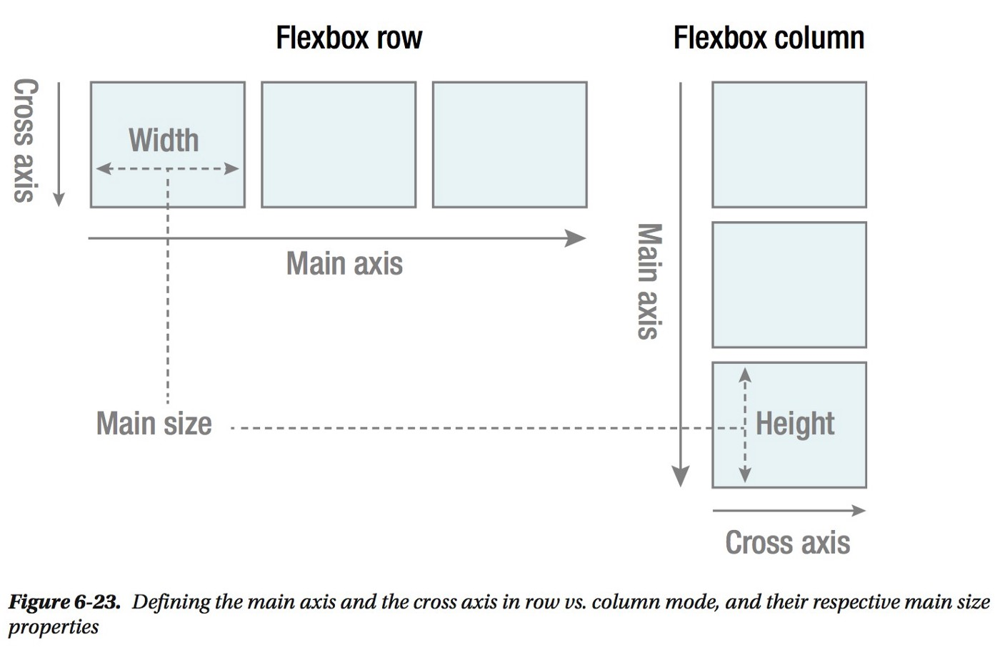
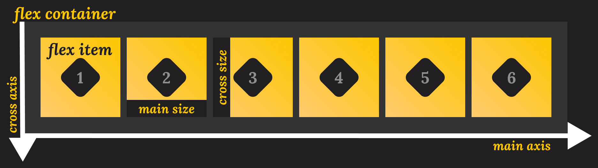

1
2
3
The Flexbox Layout (Flexible Box) module (a W3C Candidate Recommendation as of October 2017) aims at providing a more efficient way to lay out, align and distribute space among items in a container, even when their size is unknown and/or dynamic (thus the word “flex”).
The main idea behind the flex layout is to give the container the ability to alter its items’ width/height (and order) to best fill the available space (mostly to accommodate to all kind of display devices and screen sizes). A flex container expands items to fill available free space or shrinks them to prevent overflow.
Flexbox layout is most appropriate to the components of an application, and small-scale layouts, while the Grid layout is intended for larger scale layouts.
Since flexbox is a whole module and not a single property, it involves a lot of things including its whole set of properties. Some of them are meant to be set on the container (parent element, known as “flex container”) whereas the others are meant to be set on the children (said “flex items”).
If “regular” layout is based on both block and inline flow directions, the flex layout is based on “flex-flow directions”. Please have a look at this figure from the specification, explaining the main idea behind the flex layout.

When we are talking about flexbox, we are talking about a layout module, rather than a single property, as we usually do in the context of CSS. This also means we have more than one property related to flexbox. They can be set either on:

<div class="flex-container" id="flex-container">
<div>one</div>
<div>two</div>
<div>three</div>
</div>
To use flex we need to declare it to conatiner and remove regular block and inline layout.
.flex-container {
display: flex;
}
The children of our flex container become flex items as soon as their parent gets display: flex, so these initial values mean that we start seeing some flexbox behavior.
The initial values mean that:
Even though you haven't added a flex-direction property yet, the items display as a row because the initial value of flex-direction is row. If you want a row then you don't need to add the property. To change the direction, add the property and one of the four values:
The flex-flow shorthand
You can set the flex-direction and flex-wrap properties using the shorthand flex-flow. For example, to set flex-direction to column and allow items to wrap:.flex-container {
display: flex;
flex-flow: column wrap;
}
Flexbox brought with it a set of properties for aligning items and distributing space between items. These properties were so useful they have since been moved into their own specification, you'll encounter them in Grid Layout too. Here you can find out how they work when you are using flexbox.
The set of properties can be placed into two groups. Properties for space distribution, and properties for alignment.
The properties which distribute space are:
The properties used for alignment in flexbox:
If you are working on the main axis then the properties begin with justify-. On the cross axis they begin with align-.
For the justify-content property to do anything you have to have spare space in your container on the main axis. If your items fill the axis then there is no space to share out so the property won't do anything.
For the justify-content property to do anything you have to have spare space in your container on the main axis. If your items fill the axis then there is no space to share out so the property won't do anything.
The place-content shorthand
To set both justify-content and align-content you can use place-content with one or two values. A single value will be used for both axes, if you specify both the first is used for align-content and the second for justify-content.
.flex-container {
place-content: space-between;
/* sets both to space-between */
}
.flex-container {
place-content: center flex-end;
/* wrapped lines on the cross axis are centered,
on the main axis items are aligned to the end of the flex container */
}
On the cross axis you can also align your items within the flex line using align-items and align-self. The space available for this alignment will depend on the height of the flex container, or flex line in the case of a wrapped set of items.
The initial value of align-self is stretch, which is why flex items in a row stretch to the height of the tallest item by default. To change this, add the align-self property to any of your flex items.
.flex-container {
display: flex;
}
.item1 {
align-self: flex-start;
}
The align-self property is applied to individual items. The align-items property can be applied to the flex container to set all of the individual align-self properties as a group.
1
2
3
The flex items also have different properties we need to know of. They are:
We can use flex-basis to set the main size of a flex item. This is like specifying a width for the element.
.flex-items {
flex-basis: auto;
flex-basis: max-content; // Only supported in Firefox as of writing
flex-basis: min-content; // Only supported in Firefox as of writing
flex-basis: content; // Only supported in Firefox as of writing
flex-basis: 0;
flex-basis: 250px;
}
This property sets how much of the space should be taken up by the item that receives the value.
The flex-shrink property defines how much should a flex item shrink relative to other items if there's not enough space inside the container. By default, this is set to 1.
The Flex shorthand
Just as for the flex container, you also have a shorthand for flex items. This sets the following properties for a child element, in the following order:
- flex-gorw
- flex-shrink
- flex-basis
.flex-items { flex: 1 1 100px; }